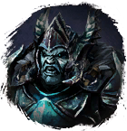

Глиф Подмастерья
Предметы / С врагов
Открыть в интерактивной вики →
| Вес | 1 |
|---|---|
| Цена | 20 000 |
Описание
Предмет необычайной мощи. Используется при создании разных вещей.
Требуется в задачах на получение ингридиентов на призыв Селена, получении бонусов в инстансе
Селена, получении бонусов в инстансе  Драугул, 1х требуется для входа в инстанс
Драугул, 1х требуется для входа в инстанс
Требуется в задачах на получение ингридиентов на призыв
Селена, получении бонусов в инстансе Драугул, 1х требуется для входа в инстанс 
Тарул и т.д| Предмет необычайной силы. Используется при создании разных вещей. |
Дроп
некоторые сильные Боссы
Применение
|
Способы получения
|
Изготовление
Изготавливает Фрахлумп в Норе двейров за 25 000 золота после доставки ингредиентов:
|